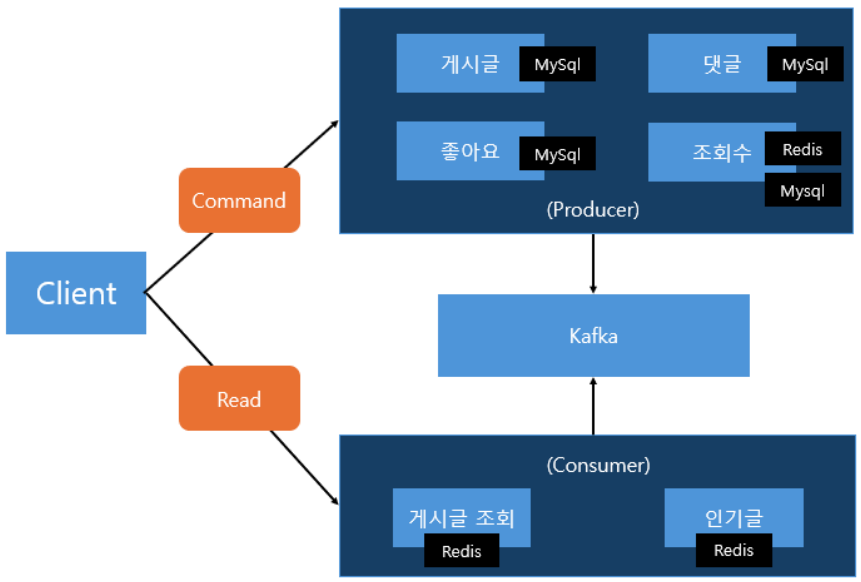

WALALAND 상품등록 성능 개선기
성과 요약
기존 현황 및 문제점
| 옵션명 | 옵션가 | 재고수량 | 판매상태 | 자체관리코드 | |
|---|---|---|---|---|---|
| 선택1 | 선택2 | ||||
| 그래파이트 블루/25인치/8 | 브라운밤피/25인치/8 | 00,000원 | N개 | 판매중 | 00000000 |
| 그래파이트 블루/25인치/8 | 그래파이트 블루/25인치/10 | 00,000원 | N개 | 판매중 | 00000000 |
| · · · · · | |||||
- 1+1 이벤트 상품의 경우 옵션1(37개) × 옵션2(53개) = 1,961개의 옵션 데이터를 저장해야 했습니다.
- 저장해야할 옵션의 개수 자체는 생각보다 그렇게 많은 데이터가 아니었지만, 기능이 동작되는데 너무 오래걸렸기 때문에 개선이 필요하다고 판단되었습니다.
개선 과정
- 쿼리 수 : 5,230회 (동일)
- 방식 : 같은 양의 일을 빠르게
- 추가 비용 : 스레드 메모리·CPU, 커넥션 풀 부담
- 쿼리 수 : ~53회 (1/100 감소)
- 방식 : 일의 양 자체를 줄임
- 추가 비용 : 없음
innodb_autoinc_lock_mode는 총 0, 1, 2의 3개가 존재합니다.innodb_autoinc_lock_mode=2가 Default로 변경되어, 테이블 수준 Lock으로 인한 병목은 기본적으로 발생하지 않음을 확인하였습니다.rewriteBatchedStatements 옵션(기본 false)을 true로 설정하여 Multi Value Insert로 변환하였습니다.binlog_format을 MIXED → ROW로 변경하여 replication 안정성을 확보하였습니다. (MySQL 8.0 이후 기본값)회고
중복된 API 호출을 줄이고, Batch 처리를 도입하여 약 11배의 성능 개선에 성공했지만 크게 두 가지 아쉬운 점이 있습니다.
1. 번역할 데이터량이 훨씬 많아질 경우
옵션 데이터는 서로 다른 상품일 경우에도 사이즈, 색상과 같이 지속적으로 중복해서 사용될 가능성이 높다는 특성을 갖고 있습니다. 현재 메모리 기반 캐싱 구조를 적용했지만, DB에서 영속적으로 보관해둘 가치가 충분히 존재합니다. 사전 시스템과 연계 설계하여 재사용할 수 있는 구조로 확장도 고려해볼 수 있을 것 같습니다.
순수 번역해야할 데이터량이 많아질 경우 파파고 API를 호출하는 로직을 비동기로 처리해 처리 시간을 추가로 단축시킬 수 있을 것 같습니다.
2. 외부 시스템에 대한 의존성
현재 구조로는 상품등록이 완료되기까지 파파고 시스템에 강하게 의존하고 있습니다. 파파고 시스템에 장애가 발생하거나, 병목이 발생할 경우 그것이 서버에 그대로 전파될 수 있다는 문제가 존재합니다.
상품이란 데이터는 사용자에게 노출되기 전 준비가 완료되면 된다는 특성이 있습니다. "번역완료" 등의 상태를 추가하고 번역완료된 상품에 대해서만 외부에서 조회될 수 있도록 한다면, 상품등록 기능을 비동기 아키텍처 구조로 설계가 가능할 것 같습니다.
이렇게되면 관리자는 번역 완료까지 기다릴 필요없이 즉시 응답을 받고 다른 작업에 집중할 수 있어 업무 효율성도 증대할 수 있을 것입니다.
번역 데이터량이 소량이거나 재사용만으로 가능할 경우, 비동기 구조는 오히려 비효율을 초래할 수 있습니다. 등록할 상품에 따라 관리자가 판단이 가능하므로 일반 상품 등록과 비동기 상품 등록을 구분하여 제공하는 방법도 있을 것 같습니다. 혹은 추후에 상품 대량 등록 기능 구현 시, 이 방식을 고려할 수 있을 것 같습니다.
FitMate — 운동 소셜 플랫폼
2026.03 ~ 진행 중 · 기획 / 백엔드 / 모바일 앱 · 1인 개발
주요 화면


프로젝트 소개
- 운동 메이트가 필요한 운동 종목들에 대해 메이트를 찾을 수 있는 소셜 플랫폼 앱입니다.
- 현재 Google Play Store 비공개 테스트를 진행 중이며, 정식 출시를 목표로 꾸준히 개선해나가고 있습니다.
- 기능 고도화 및 배포 단계에서 AI 도구(Claude Code)를 활용해 생산성을 높였습니다.
기술 스택
주요 기능
시스템 아키텍처

- 가용 서버 하나로 무중단 배포를 위해 Docker Container를 사용하였습니다.
- Cloudflare를 통해 DNS/SSL을 관리하고, Nginx 리버스 프록시를 통해 구동 중인 컨테이너로 요청이 전달됩니다.
- Nginx에서
/stomp경로에 대해 WebSocket Upgrade 헤더를 전달하도록 별도 설정하였습니다. - 캐싱 데이터 및 알림은 Redis에서 관리되며, 채팅 데이터는 MongoDB에서 관리됩니다.
- 나머지 데이터는 Oracle DB에서 관리됩니다.
주요 설계 전략
DB 교체 경험을 계기로 도메인의 외부 독립성 확보를 위해 도입하였습니다. 정의된 각 계층들을 멀티모듈로 구성하여 의존성 관리를 강화하였습니다.

- DIP를 활용해 Adapter와 UseCase 계층 사이의 결합도를 느슨하게 유지
- Domain/Port 계층은 외부 라이브러리 의존성 없음 — 비즈니스 로직의 안정성과 재사용성 보장
도메인 응집도를 높여 외부 시스템&요구사항이 변경되더라도 소프트웨어의 품질을 보다 안정적으로 유지할 수 있도록 도메인 주도 설계 방식으로 개발을 진행하였습니다.
도메인을 외부로부터 온전하게 보호하기 위해 도메인 규칙 및 로직 관리의 책임을 지닌 순수한 도메인 객체와, 영속성의 책임을 지닌 테이블 객체로 분리하였습니다.
- 도메인 클래스는 도메인 개념의 명확한 이해를 위해 Value Object를 사용
- 영속성 테이블 클래스는 실제 테이블에 삽입되는 형식과 일치하도록 모두 Raw Field로 관리
- 필요에 따라 도메인 클래스에서 VO로 정의된 개념이 테이블 클래스에서는 별도 엔티티로 분리하기도 함
각 테이블 객체 간 의존성을 분리하여 독립적으로 보호하고 외래키로 인한 DB의 오버헤드를 방지하고자 직접참조가 아닌 간접참조 방식을 택했습니다.
- 생성자의 AccessLevel을 Private 타입으로 주어 외부 접근을 차단
withId(),withoutId()팩토리 메서드로 의도에 맞는 완전 객체만 생성되도록 강제- 도메인 내부에서 생성 규칙을 안전하게 관리
도메인 간 결합도를 낮추기 위해, 연계된 처리가 필요할 경우 Event를 활용하였습니다. 또한 이벤트 처리 시, 의도한 요구사항에 따라 트랜잭션 및 에러 핸들링을 처리하였습니다.
클린 아키텍처에서 도메인은 영속성 계층을 모르므로, 도메인 객체의 변경을 어떻게 DB에 반영할 것인가가 문제였습니다. UseCase에서 직접 save를 호출하면 영속성 관심사가 비즈니스 로직에 침투하게 됩니다.
이를 해결하기 위해 Loaded<D> 래퍼 클래스를 설계하였습니다.
public class Loaded<D> {
private final D domain;
private final Consumer<D> syncCallback;
public void update(Consumer<D> updater) {
updater.accept(domain); // 도메인 변경
syncCallback.accept(domain); // 영속성 동기화 (콜백)
}
}
- Adapter에서 Loaded 생성 시, syncCallback에 JPA 엔티티 동기화 로직을 주입
- UseCase에서는
loadedMate.update(mate -> mate.close())한 줄로 도메인 변경 + 영속화가 완료 - UseCase가 영속성 메서드(save)를 직접 호출하지 않으므로 계층 간 책임이 명확하게 분리됨
- syncCallback으로 도메인 → JPA 엔티티 필드 동기화 후, JPA 더티체킹이 트랜잭션 커밋 시 자동으로 DB에 반영
각 데이터의 특성에 맞는 최적의 저장소를 선택하여, 하나의 DB로 모든 것을 처리할 때 발생하는 비효율을 해소했습니다.
회원, 메이트, 신청, 팔로우 등 핵심 비즈니스 데이터
관계형 데이터 간 정합성 보장이 중요하고, 트랜잭션/낙관적 락 등 ACID 특성이 필수적인 도메인
채팅 메시지, 채팅방, 읽음 상태
비정형 메시지 데이터의 빠른 쓰기/읽기가 중요하고, 스키마 변경에 유연해야 하는 실시간 채팅 도메인
알림, 리프레시 토큰, SMS 인증 코드
TTL로 자동 만료되는 휘발성 데이터에 적합하며, 인메모리 특성으로 빈번한 읽기/쓰기에서도 높은 성능 보장
- Port 인터페이스로 각 저장소의 Adapter를 추상화하여, UseCase 계층은 어떤 DB를 쓰는지 모르는 구조
- 테스트 환경에서는 MongoDB/Redis를 @Profile("!test")로 격리하고 Mock으로 대체하여 H2만으로 통합 테스트 수행
각 계층의 책임에 맞는 테스트를 설계하여, 변경에 안전하면서도 외부 의존성 없이 빠르게 실행 가능한 테스트 환경을 구축했습니다.
Spring 컨텍스트 없이
비즈니스 규칙 검증
Port를 Mock 처리하여
비즈니스 흐름 검증
Security 제외 후
요청/응답 구조 검증
QueryDSL 포함
쿼리 정합성 검증
UseCase → Adapter → DB
전체 플로우 검증
통합 테스트에서 MongoDB/Redis 없이 핵심 비즈니스 로직을 검증하기 위해 다음과 같이 설계했습니다.
- MongoDB/Redis 관련 Config, Adapter에 @Profile("!test") 적용하여 test 프로필에서 빈 등록 차단
- 해당 포트(LoadChatPort, LoadNoticePort)와 이벤트 리스너는 @MockBean으로 대체
- 각 계층별 테스트의 공통 설정을 추상 클래스(BaseRepositoryTest, BaseControllerTest, BaseIntegrationTest)로 통합하여 재사용
- CI/CD 파이프라인에서 테스트 통과 시에만 빌드가 진행되도록 구성
동시 요청이 발생할 수 있는 기능에 대해 경합 빈도와 비즈니스 특성에 맞는 동시성 제어 방식을 선택했습니다.
선착순 모집 시 동시 신청으로 정원을 초과하여 승인되는 Race Condition
낙관적 락으로 충돌 감지 + 자동 재시도 (최대 3회, 100ms backoff)
유저A: load(v=1) → 승인 → commit(v=2) ✅ 성공 유저B: load(v=1) → 승인 → commit 시 version 불일치! → 자동 재시도 → load(v=2) → 정원 초과 → 거절
메이트 모집글은 며칠간 열려있어 일반적으로는 신청이 자연스럽게 분산됩니다. 경합이 발생하려면 두 요청이 하나의 트랜잭션이 처리되는 짧은 시간 안에 동시에 들어와야 하는데, 이 서비스 특성상 그 확률은 낮아 대체로 저경합 환경이라고 판단했습니다. 다만 마감 임박 시점에는 신청이 집중될 가능성도 있으나, 이는 재시도 메커니즘으로 대응하고 모니터링으로 추적합니다. 저경합 환경에서는 충돌을 사전에 차단하는 것보다, 충돌이 발생했을 때만 처리하는 방식이 효율적이므로 낙관적 락을 선택했습니다.
- 비관적 락은 동시성을 확실히 보장하지만, 저경합 환경에서는 대부분의 요청이 충돌 없이 처리되므로 불필요한 락 대기만 유발할 수 있을 것입니다.
- 원자적 업데이트는 고경합에서도 안정적이지만, 동시 요청 시 행 잠금 대기가 발생하여 저경합 환경에서는 낙관적 락 대비 성능이 불리하기에 배제하였습니다.
충돌 시 서버에서 자동 재시도합니다. 재시도 간 100ms 지연을 두어 상대 트랜잭션이 커밋을 완료할 시간을 확보했습니다. 재시도 횟수를 너무 높이면 사용자 응답 지연이 길어지므로, 현재 서비스 규모에서 충돌이 연속 3회 이상 발생할 확률은 낮다고 판단하여 최대 3회로 제한하였습니다. 동시성 테스트를 작성하여 정원 초과가 발생하지 않음을 검증하였습니다.
인기 모집글의 경우 동시 신청이 몰려 재시도가 빈번할 수 있습니다. 이를 대비하여 메이트별 재시도 횟수를 DB에 기록해두고, 향후 트래픽 증가로 성능 이슈가 관측되면 고경합 메이트에 한해 비관적 락으로 전환할 수 있도록 데이터 기반의 판단 근거를 확보해두었습니다.
approvedCount가 mate 테이블에 비정규화되어 있어, 글 수정과 신청 승인이 같은 Version을 공유하여 무관한 충돌이 발생
approvedCount를 별도 테이블(mate_approved_count)로 분리하여 독립적인 @Version 관리
── 문제 상황 (같은 @Version 공유) ── 작성자: load mate(v=1) → 제목 수정 → commit(v=2) ✅ 성공 신청자: load mate(v=1) → 승인(count++) → commit 시 version 불일치! → 제목 수정과 무관한 신청인데 충돌 발생 ── 해결 후 (테이블 분리) ── 작성자: load mate(v=1) → 제목 수정 → commit(v=2) ✅ 성공 신청자: load count(v=1) → 승인(count++) → commit(v=2) ✅ 성공 → 서로 다른 테이블, 서로 다른 @Version → 충돌 없음
비정규화를 제거하고 매번 COUNT 쿼리를 수행하면 정원 체크와 저장 사이에 Race Condition이 발생하므로, 비정규화는 유지하되 카운트만 별도 테이블로 분리하는 방식을 선택했습니다. 카운트 전용 테이블에 자체 @Version을 부여하면 글 수정(mate 테이블)과 신청 승인(mate_approved_count 테이블)이 독립적인 @Version으로 동작하여 무관한 충돌이 사라집니다. 목록 조회 시에는 LEFT JOIN으로 카운트를 가져오므로 비정규화의 성능 이점도 그대로 유지됩니다.
팔로우와 찜은 "이미 존재하는지 조회 → 없으면 저장"하는 흐름인데, 두 요청이 동시에 조회하면 둘 다 "없음"으로 판단하여 중복 저장될 수 있습니다.
애플리케이션 레벨의 중복 체크만으로는 이를 방지할 수 없으므로, DB 유니크 제약을 최종 방어선으로 설정하여 데이터 정합성을 보장했습니다.
CI/CD 무중단 배포

ports로 외부 노출, 나머지 컨테이너는 expose로 Docker Network 내부 통신만 허용하여 보안성 확보.
분산시스템 학습 프로젝트
2025.02 ~ 2025.05 · Backend · 1인 개발
프로젝트 개요
일을 하면서 항상 같은 기능이라도 대규모 트래픽이 발생하거나 동시성 이슈가 발생하는 등 복잡한 상황에서는 어떻게 처리해야 할지 고민하고 싶은 니즈가 있었습니다. 이에 따라 순전히 학습만을 위한 Toy 게시판 프로젝트를 진행하면서 평소 하고 싶었던 고민들을 하며 기술적으로 성장해보고 싶어 프로젝트를 시작하게 되었습니다. 약 1,200만 건의 게시글 데이터를 기준으로 분산시스템 환경에서 최대한 효율성을 고려해 기능을 구현해보려고 노력했습니다.
시스템 아키텍처
게시판 서비스 특성 상, 읽기 트래픽이 쓰기 트래픽에 비해 상당히 높은 경향이 있습니다. 따라서 CQRS 패턴을 서비스, DB 레벨에 적용하여 부하를 분산시켰습니다. Kafka를 활용하여 쓰기 영역 서비스들과 읽기 영역 서비스들의 결합도를 낮추어, 각 영역에 장애가 발생했을 때 전파되지 않도록 하였습니다. 성능이 중요한 기능들은 Redis에 비정규화하여 저장해놓고 캐싱을 적극 활용하고자 했습니다.

주요 트러블 슈팅
N번 페이지에서 M개의 게시글 목록을 최신순 조회 시, 1,200만 건 데이터에서 30건 조회에 약 4초 소요
board_id, article_id 복합 인덱스 + Covering Index + Sub Query Join으로 개선
SELECT * FROM article WHERE board_id = 1 ORDER BY created_at DESC LIMIT 30 OFFSET 90;
- Type = ALL: Table Full Scan 수행
- Extra = Using where; Using filesort: 데이터가 너무 많아 메모리에서 정렬 불가, 디스크에서 정렬 수행
- 즉, 1,200만 건 전체 데이터에 대해 필터링 및 정렬을 수행하기 때문에 큰 비용 발생
게시판 별로 필터링하고, 최신순으로 정렬하기 위해 (board_id, article_id) 복합 인덱스를 생성. 분산 시스템을 고려해 Snowflake로 채번하고 있는 article_id를 최신순 인덱스로 채택했습니다.
- type = ref: Table Full Scan 제거, 인덱스 기반 접근으로 변경
- Extra = NULL: Using where, Using filesort 모두 사라짐
- 결과: 약 4초 → 0초대로 대폭 개선
Offset이 매우 큰 경우(1,499,970) 다시 약 4초가 소요되었습니다. 인덱스를 잘 사용하고 있음에도 느린 이유를 분석했습니다.
- 생성한 인덱스는 Secondary Index로, 원본 데이터 접근을 위해 Clustered Index를 다시 탐색해야 합니다
- 즉, 인덱스 트리를 두 번 타게 되는 구조
- 필요한 데이터는 Offset 1,499,970 이후인데도, 그 이전의 모든 데이터에 대해 Clustered Index에 불필요하게 접근하고 있었습니다
인덱스에 걸어둔 두 컬럼(board_id, article_id)만 먼저 조회하면, Secondary Index만으로 데이터를 가져올 수 있어 Clustered Index 접근이 사라집니다.
select * from ( select article_id from article where board_id = 1 order by article_id desc limit 30 offset 1499970 ) t left join article on t.article_id = article.article_id;
- Extra = Using index: 인덱스만으로 데이터 조회 (Covering Index 동작 확인)
- Covering Index를 통해 추출된 30건의 article_id에 대해서만 Clustered Index에 접근하도록 Sub Query + Join 활용
Secondary Index → Clustered Index 접근하는 리소스 비용이 생각보다 굉장히 크다는 사실을 알 수 있었습니다. 이는 인덱스를 설계할 때 굉장히 중요한 포인트가 될 수 있을 것입니다. 이에 따라 최초 인덱스를 설계할 때, Covering Index가 가능하도록 설계하는 방향을 고려하는 것은 좋은 방향이 될 것 같다고 느꼈습니다.
어뷰저가 게시글을 반복 조회하여 조회수를 조작하면, 인기글 데이터까지 왜곡될 수 있음
Redis 분산 Lock(TTL 10분)으로 사용자별 게시글당 10분에 1회만 조회수 카운트
각 사용자는 게시글 1개당 10분에 1번씩만 조회수를 증가시킬 수 있다.
최대 약 1,200만 건의 게시글 데이터 각각에 대해 사용자 별로 상태를 관리해야 하는데, 메모리 상에서 이렇게 많은 상태를 관리하기에는 비효율적이므로 DB를 상태 저장소로 채택했습니다. 약 10분 정도면 어뷰징 방지도 어느정도 가능하면서, 캐싱 등을 활용하면 DB 용량도 꽤 효율적으로 사용가능할 것이라 판단하여 10분 동안 상태를 관리하기로 결정했습니다.
| 비교 항목 | MySQL | Redis |
|---|---|---|
| 빠른 성능 | 디스크 기반 | In-memory 기반으로 유리 |
| 동시성 핸들링 | 동시 요청 시 Lock 점유 필요 | 싱글 스레드 직렬 처리로 Lock 불필요 |
| 자동 삭제 | 배치 시스템으로 별도 구현 필요 | TTL로 자동 삭제 가능 |
- TTL을 10분으로 하여, Redis를 사용해 해당 게시글 ID, 사용자 ID에 대해 setIfAbsent로 Lock을 걸어줍니다
- Lock 획득에 성공하면 조회수를 카운트하고, 이후 동일한 사용자가 동일한 게시글을 다시 조회했을 때 10분이 지나지 않았다면 Lock 획득에 실패하여 조회수는 카운트되지 않습니다
- 사용자는 10분 내에 여러 번 동시에 조회 시도하더라도 Redis로부터 분산 Lock을 단 1번만 획득 가능합니다
Redis를 상태 저장소로 선택한 덕분에 TTL을 통해 10분 만료를 자동 처리할 수 있어 별도의 정리 로직이 불필요했습니다. 또한 분산 환경에서 여러 API 서버가 동일한 Redis를 바라보므로 어떤 서버로 요청이 들어오든 일관된 어뷰징 방지가 보장됩니다. 향후 트래픽이 더 커지면 Redis Cluster로 수평 확장이 가능하다는 점도 확장성 측면에서 좋은 선택이었다고 생각합니다.
Producer가 비즈니스 로직은 성공했지만, Kafka로 Event 전송 중 장애가 발생하면 이벤트가 유실되어 데이터 정합성 문제가 발생
Transactional Outbox 패턴으로 본 데이터 변경과 이벤트 기록을 단일 트랜잭션으로 처리
| Two Phase Commit | Transactional Outbox | |
|---|---|---|
| 장점 | 실시간으로 강력한 일관성 보장 | 이벤트 유실 가능성 없음, 실패 시 재전송 가능 |
| 단점 | 락 유지시간이 길어질 수 있어 성능 저하 우려, 보상 트랜잭션의 복잡성 | 추가 Outbox 테이블 관리 필요 |
Consumer로 구현되는 게시글 조회 서비스에 비정규화 Query Model의 업데이트, 인기글 서비스 정도이므로 이벤트 처리가 꼭 실시간으로 강력하지 않고 최종적인 데이터 정합성만 맞는다면 상관이 없다고 여겨졌습니다. 더군다나 이벤트 전송이 실패해도 얼마든지 별도로 재전송이 가능합니다.
Table
Table
(10초 간격 Polling)
Relay
- Producer 서비스는 비즈니스 로직을 수행하며 본 데이터의 상태 변경과 Outbox Table 이벤트 기록을 단일 트랜잭션으로 처리합니다
- Message Relay는 Outbox Table에서 미전송 데이터를 주기적으로 Polling(10초 간격)하여 조회하고 Kafka로 전송합니다
- 10초도 여전히 너무 길 수 있으므로, Producer 로직이 수행되면(트랜잭션 커밋되고나면) Message Relay로 이벤트를 즉시 전달하여 Kafka로 바로 이벤트 전송을 시도합니다
- 이후 Polling은 전송에 실패한 이벤트들에 대해서만 처리되도록 하였습니다
- 전송 완료된 이벤트는 더 이상 필요없으므로 삭제 처리하였습니다
- 이벤트 즉시 전달 처리와 Polling은 각각 별도의 Thread로 할당하여 처리되도록 하여 성능을 극대화하였습니다
- 이벤트 Polling은 Spring의 Scheduler를 활용하여 10초마다 정기적으로 실행되도록 하였습니다
- @TransactionalEventListener(BEFORE_COMMIT)으로 Outbox 이벤트를 Commit 직전에 저장하고, AFTER_COMMIT으로 커밋 후 즉시 Kafka 전송을 시도합니다
조회수 데이터를 1초 캐싱 처리했지만, 캐시 만료 타이밍에 동시 요청이 몰리면 캐싱을 활용하지 못하고 모두 원본 API를 호출
Logical TTL + Physical TTL 분리와 분산 Lock으로 Request Collapsing 구현
조회수 데이터는 조회수 서비스에서도 이미 속도가 빠른 Redis에 저장하고 있어 Query Model에 비정규화하지 않았습니다. 대신 매번 API 호출해서 가져오기에는 높은 트래픽에 대응하기 어려우므로 조회수 데이터를 1초정도 짧게 캐싱하여, 만료된 경우에만 API 호출하도록 처리한 상태였습니다.
캐시 만료 타이밍에 동시요청을 2번 보내는 테스트를 통해 동작과정을 분석했습니다.
- 1번 요청으로 인해 원본 데이터를 가져와 반환 후, 아직 캐시에 적재되기 전에 2번 요청이 들어옴
- 캐시 만료가 되고나서 아직 캐시에 쌓이기도 전에 동시에 한꺼번에 요청이 몰려버려서 해당 요청들이 모두 캐싱을 활용하지 못하고 그대로 API 요청을 수행
- 게시판의 조회 기능 특성 상, 충분히 특정 타이밍에 트래픽이 몰릴 수 있어 반드시 해결되어야 할 문제
최초 1번 요청이 왔을 때 Lock을 점유하고, 읽고나서 캐시에 적재 후 Lock을 반환하는 방식을 고려했습니다.
다른 동시 요청들은 캐시가 갱신될 때까지 대기해야 합니다
단 1초를 잘 사용하기 위해 Lock을 걸어서 다른 요청들을 대기시킨다?... 비효율적
Request Collapsing은 여러 개의 동일하거나 유사한 요청을 하나의 요청으로 병합하여 처리하는 기법입니다. Lock이 걸려있는 동안 캐시가 갱신될 때까지 기다리지말고 그대로 바로 응답해버리면 해결되지 않을까? 라는 생각이 들었습니다.
캐시 갱신을 위한 만료시간
실제 캐시 데이터 만료시간
만료되었더라도 실제 데이터를 여전히 갖고 있어야 하므로, 캐시 데이터의 만료시간을 Logical TTL과 실제 만료시간인 Physical TTL 두 가지로 분리했습니다. Logical TTL이 만료되면 Lock 획득을 시도하고, 성공한 요청만 원본 데이터를 가져와 캐시를 갱신합니다. Lock 획득에 실패한 동시요청들은 Physical TTL이 아직 지나지 않아 실제 캐시 데이터가 남아있기 때문에 기존 데이터를 그대로 반환합니다.
- Spring AOP + 커스텀 어노테이션(@OptimizedCacheable)으로 캐싱 처리를 추상화
- 실제 캐싱 처리는 OptimizedCacheManager를 만들어서 책임을 위임하여 처리
- 분리된 논리적 캐시와 물리적 캐시를 이용해 Lock 획득에 실패 시 기존 캐시데이터를 그대로 반환하도록 처리
캐싱을 해놓았다고 해서 성능 최적화가 끝난 것이 아니라는 점을 배웠습니다. 동시성 문제나 트래픽 증가에 따라 추가 문제가 발생할 수 있으므로, 이를 미리 예상하여 테스트코드로 해당 문제 상황을 재현할 수 있어야 한다는 것을 느꼈습니다.
또한 이번에 적용한 캐시 최적화 전략이 모든 경우에 적합하지는 않다는 점도 인식하게 되었습니다. Logical TTL과 Physical TTL이 다르기 때문에, 갱신이 처리되기 전까지 과거 데이터가 일시적으로 노출될 수 있습니다. 데이터 일관성이 중요한 경우에는 치명적인 영향을 끼칠 수 있으므로, 데이터 특성에 따라 전략을 달리 적용해야 한다는 점을 배웠습니다.